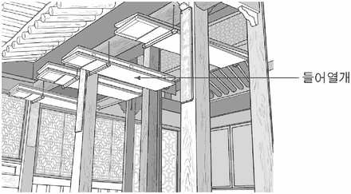

한옥의 창호
지문을 먼저 읽고, 이해가 막히는 문단에서 ‘그림으로 보기’를 누르세요. 그림은 문단을 따라 바뀝니다.
1문단창은 채광이나 환기를 위해서, 문은 사람들의 출입을 위해서 건물 벽에 설치한 개폐가 가능한 시설이다. 일반적으로 현대적인 건축물에서 창과 문은 각각의 기능이 명확하고 크기와 형태가 달라 구별이 쉽다. 그러나 한국 전통 건축, 곧 한옥에서 창과 문은 그 크기와 형태가 비슷해서 구별하지 않는 경우가 많다. 그리하여 창과 문을 합쳐서 창호(窓戶)라고 부른다. 이것은 창호가 창과 문의 기능과 미를 공유하고 있다는 것을 의미한다. 그런데 창과 문을 굳이 구별한다면 머름이라는 건축 구성 요소를 통해 가능하다. 머름은 창 아래 설치된 낮은 창턱으로, 팔을 얹고 기대어 앉기에 편안한 높이로 하였다.
2문단공간의 가변성을 특징으로 하는 한옥에서 창호는 핵심적인 역할을 한다. 여러 짝으로 된 큰 창호가 한쪽 벽면 전체를 대체하기도 하는데, 이때 외부에 면한 창호뿐만 아니라 방과 방 사이에 있는 창호를 열면 별개의 공간이 합쳐지면서 넓은 새로운 공간을 형성하게 된다. 창호의 개폐에 의해 안과 밖의 공간이 연결되거나 분리되고 실내 공간의 구획이 변화되기도 하는 것이다. 이처럼 창호는 한옥의 공간 구성에서 빠트릴 수 없는 중요한 위치를 차지한다.
3문단한편, 한옥에서 창호는 건축의 심미성이 잘 드러나는 독특한 요소이다. 창호가 열려 있을 때 바깥에 나무나 꽃과 같은 자연물이 있을 경우 방 안에서 창호와 일정 거리 떨어져 밖을 내다보면 창호를 감싸는 바깥 둘레 안으로 한 폭의 풍경화를 감상하게 된다. 방 안의 사람이 방 밖의 자연과 완전한 소통을 하여 인공의 미가 아닌 자연의 미를 직접 받아들임으로써 한옥의 실내 공간은 자연과 하나 된 심미적인 공간으로 탈바꿈한다. 열린 창호가 안과 밖, 사람과 자연 사이의 경계를 없앤 것이다.
4문단창호가 닫혀 있을 때에는 창살 문양과 창호지가 중요한 심미적 기능을 한다. 한옥에서 창호지는 방 쪽의 창살에 바른다. 방 밖에서 보았을 때 대칭적으로 배열된 여러 창살들이 서로 어울려 만들어내는 창살 문양은 단정한 선의 미를 창출한다. 창살로 구현된 다양한 문양에 따라 집의 표정을 ⓐ읽을 수 있고 집주인의 품격도 알 수 있다. 방 안에서 보았을 때 창호지에 어리는 햇빛은 이른 아침에 청회색을 띠고, 대낮의 햇빛이 들어올 때는 뽀얀 우윳빛, 하루 일과가 끝날 때쯤이면 석양의 붉은색으로 변한다. 또한 창호지가 얇기 때문에 창호가 닫혀 있더라도 외부와 소통이 가능하다. 방 안에서 바깥의 바람과 새의 소리를 들을 수 있고, 화창한 날과 흐린 날의 정서와 분위기를 느낄 수 있다. 창호는 이와 같이 사람과 자연 간의 지속적인 소통을 가능케 함으로써 양자가 서로 조화롭게 어울리도록 한다.
윗글을 읽고 <보기>의 ㉠을 이해한 것 중, 적절하지 않은 것은? [3점]
㉠들어열개는 창호의 두 문짝을 접고 그것을 들어, 처마 밑에 달려 있는 걸쇠에 매달게 한 창호를 말한다. 그림의 한옥은 사랑채의 대청으로 수목이 있는 마당과 주변의 산을 마주보고 있고, 대청 전면의 들어열개를 모두 들어 올린 상태이다. 들어열개를 내려서 펼치면 대청 전면은 모두 창호로 채워지게 된다.

그림: 사랑채 대청 전면의 들어열개를 모두 들어 올려 처마 밑 걸쇠에 매단 모습" style="display:block;width:100%;max-width:440px;margin:6px auto 0">